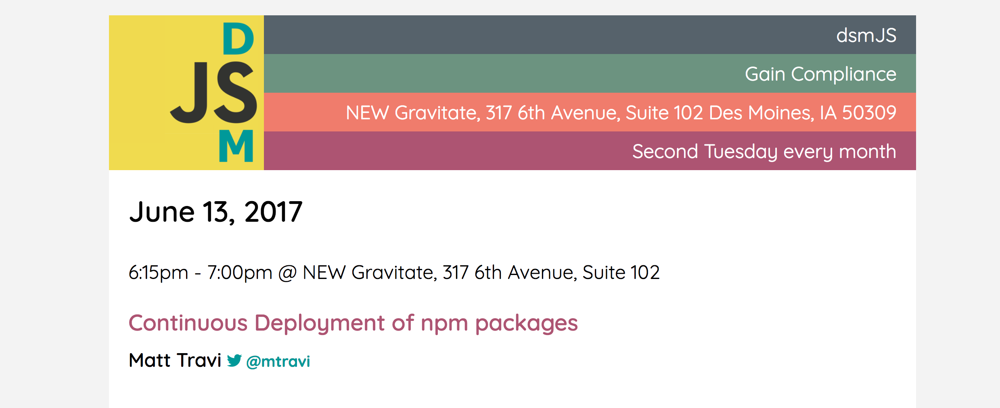
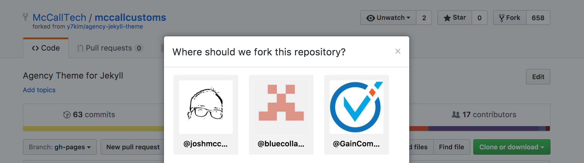
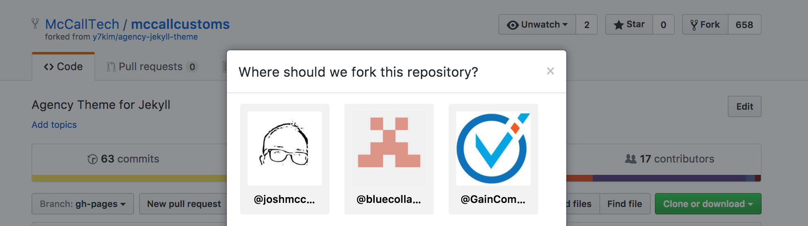

Jekyll: lets talk about it!
- @dsmwebgeeks
- Josh McCall
- @mtravi @ @dsmjs
- Why
- Why
- What is Jekyll
- Find a theme
- Fork a theme
- Settings
- _config
- Settings
- Tada!!!!
- _configure.yml _layout
- _site
- CNAME
- Hands on with Codenvy
- Tools and Links
- talks
- Blogs / Resources
- Ember
@dsmwebgeeks

Josh McCall

joshuamccall.com | joshmccall221 | joshmccall | gaincompliance
@mtravi @ @dsmjs

Goals for this talk
- Why
- What
- How
Goals for this talk
- Why
- What
- How
- Other tools!!!
Why
- Anyone have a Jekyll site, blog, portfolio etc.?
Crafting a Brand
- Personal Brand: Personal Brand
- Portfolio w/ Jekyll: Building personal websites with Github and Jekyll
- Bloggin w/ Gitbook: Gitbook: Getting started
- Better Resumes w/ HackMyResume: HackMyResume + JSON Resume
Why
- Clients, friends and family, projects...## What is "Static Sites with Jekyll"

Site: https://jekyllrb.com/## Why Static?
- No database
- Faster
- Secure
- Less Maintenance
- Lower Cost
- Blog Aware
- Markdown## What is Jekyll?
- Blog-aware
- Static site generator
- Markdown / Liquid## Who uses Jekyll?### GitHub Pages

Tom Preston-Werner (Founder of Github)

Blogging Like a Hacker (Link)
"The system is simple enough that I can keep the entire conversion process in my head. The distance from my brain to my blog has shrunk, and, in the end, I think that will make me a better author."
Obama campaign's $250 million fundraising platform

Kyle Rush

Meet the Obama campaign's $250 million fundraising platform
- Static HTML pages generated by Jekyll
- Served by Akamai CDN, origin hosted on Amazon S3
- Version control with GitHub
"We made the new platform 60% faster and this resulted in a 14% increase in donation conversions."
Podcast 54: Jekyll and CMS-less websites with Young Hahn and Dave Cole
React

(Link)
Lean TECHniques
 (Link)
(Link)
What is Jekyll
How do you use it?
Find a theme

Fork a theme
 

Settings

_config

Settings

Tada!!!!

(Link)
_configure.yml _layout
note: if file does not load, scroll left/right (silly github!)
_site
$ jekyll build
=> The current folder will be generated into ./_site
CNAME


Hands on with Codenvy
codenvy.io

New workspace

FROM sunix/jekyll4che
Click save

Add your project

Click Create

Create a new custom command and save
Name: Run Jekyll
Command line: cd $(ls /projects/) && jekyll serve --host=0.0.0.0
Preview URL: http://${server.port.4000}/

Run command and visit the preview link

Enjoy your cloud dev environment!!!

Tools and Links
- google.com/search?q=jekyll
- StaticGen - Top Open-Source Static Site Generators
- jekyll-admin
- Docker
- Logos
Serverless resources
- http://nobackend.org/
- https://backendless.com/
- http://unhosted.org/
- https://staticapps.org/
- https://serverless.com/blog/
- https://coryrylan.com/blog/fast-and-secure-blogs-with-firebase
- Coding Architecture: When you need a 3 tier architecture
Planet Jekyll
Themes
Local Sites
- http://ottumwa1stchurch.com/
- https://jimsapplservice.github.io/
- http://mccallcustoms.com/
- https://github.com/AppleCreekIowa/applecreek-main/pull/1
- http://www.leantechniques.co/
talks
Jekyll Conf
Doing A Lot With A Little - David Darnes / JekyllConf 2016
- https://www.youtube.com/watch?v=Y4qwpN40Dvg
- http://slides.com/daviddarnes/deck-1#/3
- eCommerce
- Site Search
- Contact forms
Continuous Deployment Of Jekyll Sites Powered By Docker - David Von Lehman / JekyllConf 2016
- https://youtu.be/wMlPlKCZfEk
- https://bitbucket.org/aerobatic/jekyll-cd-slides/src/c80720459e87?at=master
- Slides: https://bitbucket.org/aerobatic/jekyll-cd-slides/src/c80720459e87f51b49b42f3b2aa8a260bddb9c92/_slides/007-dockerfile.html?at=master&fileviewer=file-view-default
Getting Started With Jekyll
Introducing and Launching Jekyll 3.0
- https://www.youtube.com/watch?v=sPZK8w55cBQ&index=3&list=PLrQsVT7x8HYGRo4WGKsjXx1cRAE8EAHgp
- Parker Moore (parkr) - Maintainer
Converting a static site to Jekyll - CloudCannon Casts
- https://youtu.be/yXXj9oYFXRI?list=PLrQsVT7x8HYGRo4WGKsjXx1cRAE8EAHgp
- source : https://github.com/CloudCannon/creative-jekyll-theme/
Building Our Agency Site With Jekyll - David Jones / JekyllConf 2016
- https://youtu.be/4XxYQ7efk0E?list=PLrQsVT7x8HYGRo4WGKsjXx1cRAE8EAHgp
- site: https://resolve.digital/services/
- Jekyll import (RSS feed)
Design + Code — Hour 8.2: Jekyll Blog Loop
Youtube Playlist:
Blogs / Resources
- jekyll-v-ghost-creating-a-new-blog-and-why-i-did-it-the-hard-way
- blogging-platform-comparison
- performant-websites-with-jekyll-grunt-github-pages-and-cloudflare
- Jekyll-Angular-Firebase (JAF) stack
- jekyll-angular-firebase
- Migrating from Ghost to Jekyll
- Save 50 Hours Setting up Your Jekyll Blog
- Automate GitHub Pages publishing with Jekyll and Travis CI
- Blogging with Jekyll + Github and Medium vs other platforms.
- build-blog-jekyll-github-pages
- How To Schedule Posts for Static Site Generators (Jekyll, Hugo, Phenomic etc.)
Ember
git clone https://github.com/ember-fastboot/fastboot-website
cd fastboot-website
npm install
ember serve
Visit the app at http://localhost:3000.
robwebdev: ember-cli-static-site-website
- Static: ember-fastboot
- ember-cli-static-site
- Rethinking Static Sites
- Using Ember CLI as a Single Page Static Site Generator
- Kickstarting a static website with ember.js and handlebars.js
- ember-static